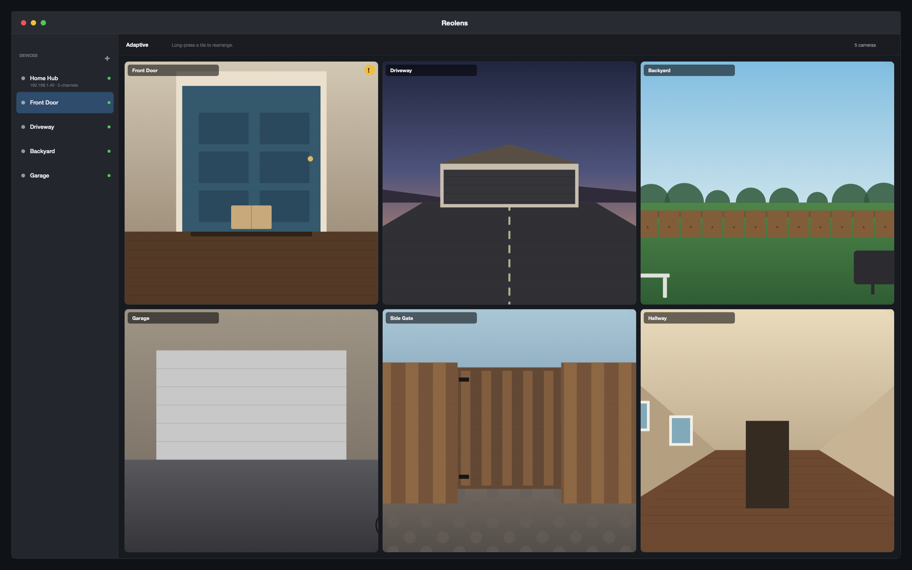
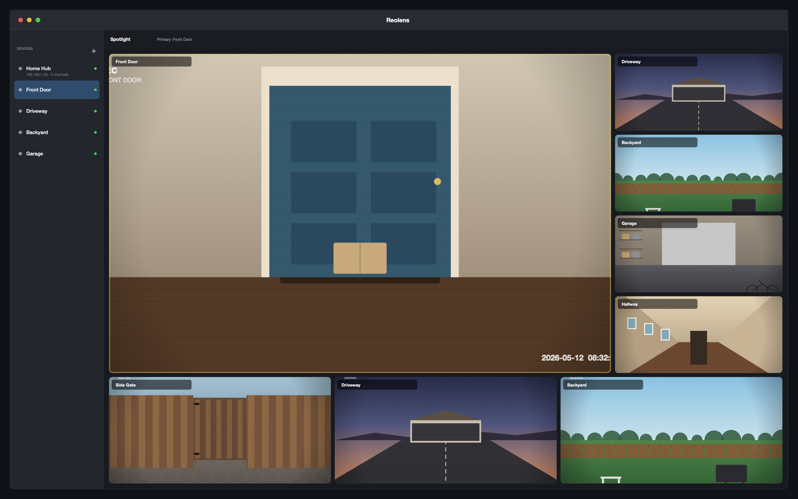
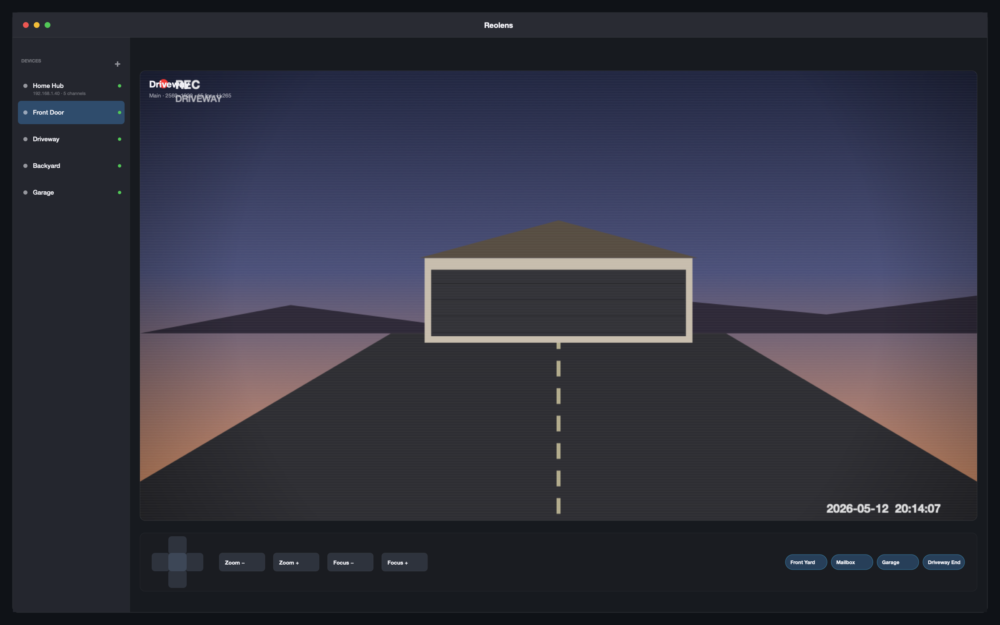
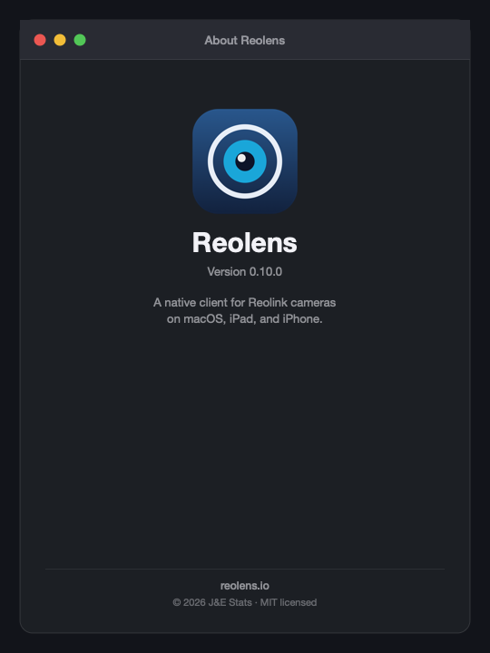

reolens-cli
List cameras, save snapshots, jog PTZ, search recordings, follow live events — from the terminal, with JSON output built for jq and scripts. The Mac app keeps holding sessions and passwords; the CLI holds only the API token.
Native on every platform. Live multi-camera grids, PTZ control, cross-day AI search, rich motion notifications, and your camera list synced via iCloud — passwords stay per-device in Keychain. New in 0.10: a command line and an MCP server, so scripts and AI agents drive the same cameras.
"Drive it from anywhere local" — Reolens gains a terminal and an agent surface, on top of 0.9's support for cameras that ship with their web API turned off.
List cameras, save snapshots, jog PTZ, search recordings, follow live events — from the terminal, with JSON output built for jq and scripts. The Mac app keeps holding sessions and passwords; the CLI holds only the API token.
reolens-cli mcp-server exposes typed camera tools to Claude Code, Codex, Cursor, and any MCP client — "point the back-yard camera left, then take a snapshot." LAN-only, token-gated, no cloud.
Newer Reolink firmware ships with HTTP/HTTPS disabled. Since 0.9 those cameras connect automatically over Baichuan (port 9000) — live video, motion/AI events, and PTZ, with no setting to change.
One clear message per connection problem — refused port, timeout, wrong password, web API off — plus a per-camera diagnostics readout in the API, the CLI's doctor, and Settings.
Adaptive layout fills the screen. Switch to Spotlight, 2×2, 3×3, 4×4, or 5×5 with one tap — on every platform.
Long-press any tile and watch them jiggle iOS-home-screen style. Drag to reorder; the order sticks per device.
Type a name to filter the device list — case- and diacritic-insensitive. Find one camera in a 16-channel NVR instantly.
Capture the current frame on any tile. macOS writes to your Pictures folder; iOS writes to Photos with add-only permission — Reolens never reads your library.
Visual 7×24 weekly editors for when each camera records and when motion fires alarms. Per-AI-tag overrides let you quiet a specific tag without silencing the rest.
"Packages this week", "vehicles yesterday at the driveway." On-device FoundationModels handles synonyms and camera-name fuzziness; deterministic fallback everywhere else.
Long-press / right-click / swipe to bookmark without playing. The clip downloads in the background — Wi-Fi by default, cellular toggle in Settings — so it's available offline.
Keep a camera in a floating window while you use other apps. Smooth hand-off — no extra decode.
Up to 4× digital zoom on the live tile to inspect a license plate or package label. Double-tap to reset.
Pan, tilt, zoom, focus — all 17 PTZ ops from the dedicated control bar, including presets and patrols.
"Hey Siri, open the Front Door camera in Reolens." Plus Show Today's Events and Mute Camera Notifications App Intents. No credentials ever cross the intent boundary.
When motion fires, you get a notification with the still that triggered it — not just text. Per-camera mute + per-tag filters + an overnight digest, all syncing across your devices.
Camera snapshot, last-motion, and overnight-digest widgets on the Home Screen, Lock Screen, and Control Center. Hub-grouped Live Activities + Dynamic Island for in-flight motion events.
SwiftUI + Apple's video decoders. Cold launches in under a second, costs almost nothing in battery, and feels like every other Apple app.
One multiplatform app delivered through TestFlight and the App Store on Mac, iPad, and iPhone — updates arrive like any other Apple app. We never phone home with anything else.
Camera list, grid layouts, rotations, codec preferences sync via iCloud Drive. Passwords stay per-device in Keychain — never copied off the device they were entered on.
Swift 6, MIT-licensed, on GitHub. Engineering principles in AGENTS.md, security policy in SECURITY.md.
Turn on the Local API on your Mac, copy its token, and the same cameras answer to scripts and AI agents — no cloud account anywhere in the loop.
$ reolens-cli cameras list | jq -r '.data[].displayName'
Front Door
Driveway
$ reolens-cli --camera "Front Door" snapshot --file porch.jpg
$ reolens-cli --camera Driveway ptz left --duration-ms 800
$ reolens-cli events --types person --max-events 1
{"cameraID":"…","channel":0,"detection":"person","kind":"ai",…}The app, the REST API, the CLI, and the MCP server all speak the same versioned /v1 contract. Point Home Assistant at the MJPEG stream, a Shortcut at the JSON, or Claude Code at the MCP tools — your camera passwords never leave the Mac's Keychain.
--yes in the CLI, confirm: true over MCP.The camera views shown here are procedurally rendered ("stock" scenes) rather than real footage — privacy-clean, license-clean, and a more honest look at the app's chrome than blurred captures.




Reolens ships as one multiplatform app through TestFlight. Open the invite on each device and TestFlight installs the right Mac, iPad, or iPhone build for you.
Join the betaThe universal reolens-cli binary — CLI plus MCP server — attaches to every GitHub Release. Needs Reolens for Mac running with the Local API enabled.
Prefer to build it yourself? Clone the repo and run:
./Scripts/build-app.sh runUsers on macOS 14 / iOS 18 should stay on the 0.4.x security-backport track. FoundationModels-driven features (Today digest, NL search) fall back to deterministic implementations on devices without Apple Intelligence.